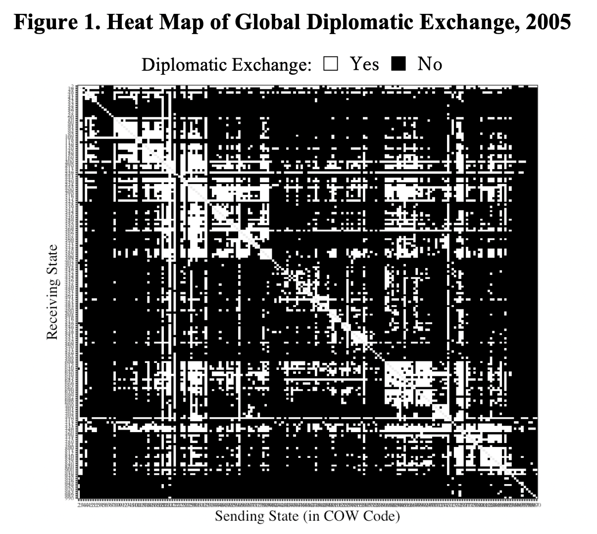
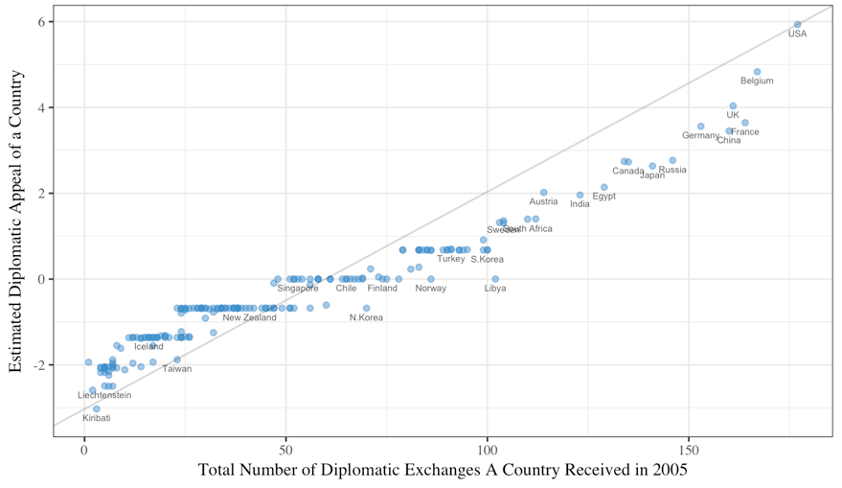
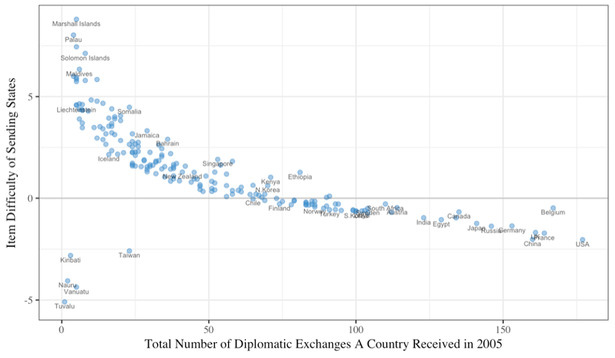

3 Model & Research Design
From the Correlates of War diplomatic exchange data (v2006.1), I transformed observations in 2005 into a 192 by192 matrix, with each row as a receiving state and each column as a sending state. According to the codebook, most of the data in this period are collected from the Europa World Year Book series and ministry of foreign affairs of various countries. The item response of interest is the binary indicator of whether a diplomatic exchange exists between the receiving and sending state. The response is constructed according to the coding criteria: 0 = neither side was represented on the other side; 1 = at least one side was represented on the other side. Figure 1 is a visual representation of the data with states ordered by their COW Code.

The Two-Parameter IRT model (2PL) was used to analyze the diplomatic responses of 192 items (sending state) on 192 persons (receiving state) in R with the package ltm (Rizopoulos 2015), which adopts a Marginal Maximum Likelihood approach in parameter estimation. In the context of our case, the equation for 2PL is as follows:
\[ Pr(x_{rs}|\alpha_s,\beta_s,\theta_r) = \frac{esp(\alpha_s(\theta_r-\beta_s))}{1+ exp(\alpha_s(|\theta_r - \beta_s ))} \] where \(x_rs\) indicates a diplomatic exchange from sending state \(s\) to receiving state \(r\). Item parameters \(\alpha_s\) and \(\beta_s\) represent the discrimination and difficulty parameter of \(s\). The person parameter \(\theta_r\) is our goal of measurement: the diplomatic appeal of \(r\).
3.1 Results
3.1.1 Ranking of Diplomatic Appeals (Persons Location)
In Figure 2, I plot the estimated θ_r on the y-axis against the total number of diplomatic exchange on the x-axis to compare an IRT-based and the conventional approach. While the two measurements are positively correlated, there are some notable differences. First, from the right, while the relative positions of the U.S. and Belgium remains the same, the locations of France, United Kingdoms, China, and Germany are different on the two axes. Although U.K., France, and China are roughly equal in terms of diplomatic exchange, the IRT-estimated diplomatic appeals of U.K. and France are higher than that of China. Similarly, despite having fewer diplomatic exchanges than China, Germany’s higher vertical location suggests that it was “punching above its weight.” The same thing can also be said for Canada against Japan and Austria against India. On the other hand, some countries are underachievers in their IRT-estimated diplomatic appeals compared to their total exchange count. Two examples are Libya and North Korea. Libya had the same number of exchange as Sweden, but its diplomatic appeal is much lower. Compared to Chile and Singapore, North Korea’s diplomatic appeals are also much lower despite having more diplomatic exchange.

3.1.2 Item Difficulty
Figure 3 presents the item location of each sending state. For states that have a large number of diplomatic exchange such as the United States, the estimated item difficulties are quite low and below zero. While this can be counter-intuitive, it is not necessarily inconsistent with the theoretical logic: since many diplomatically active states have large and more developed domestic economies, their resource abundance and wide spread economic interests could make their decision in sending diplomatic missions less selective and hence reveal less information about the diplomatic appeals of a receiving state. Indeed, on the right side of Figure 3, the country with highest item difficulty is also the smallest one. Compared to regional powers such as U.S., China, France, and Germany, Belgium is estimated to be more selective of their diplomatic partners and have a higher difficulty compared to the local mean.

By contrast, the fact that many states with fewer diplomatic exchanges are smaller in domestic economy and population can partially explain their higher item difficulties due to the need to be more selective. It is worth noting, however, that a separate group exists on the bottom-left of the graph. Despite their small size, Kiribati, Nauru, Tuvalu, Vanuatu, and Taiwan are even less selective compared to states on the right. The particularities of this group will be made clear when we look at item discrimination and the ICCs of these states in the next section.
3.1.3 Item Discrimination
While states with more diplomatic exchange tend to have smaller item difficulties, they are no less capable of discriminating their potential partners based on diplomatic appeals. As shown in Figure 4, all states on the right have positive discrimination parameters. As a sending state, Germany has the highest discrimination value, which is followed by Austria and Switzerland. On the left side of Figure 4, we once again observe the curious pattern of Tuvalu, Vanuatu, Taiwan, and Kiribati. The negative discrimination implies that they are more likely to establish exchange with countries that have low diplomatic appeals. I demonstrate this pattern visually with a selected sample of item characteristic curves (ICC). As shown in Figure 5, when a receiving state’s diplomatic appeals move from low to high, the probability of diplomatic exchange also increases. This is not the case in Figure 6. For Kiribati, Nauru, Taiwan, Tuvalu, and Vanuatu, the higher their potential partner’s diplomatic appeal, the lower the probability of diplomatic exchange. While this result is puzzling at first glance, one plausible explanation can be found in the war over diplomatic recognition between Taiwan and the People’s Republic of China (PRC). Since Taiwan lost its right to represent China at the United Nations in 1973 to the PRC, most of its former diplomatic allies switched diplomatic recognitions to China and cut ties with Taiwan. As a result, Taiwan has long sought to establish diplomatic relationship with countries who are willing to offer “status for sale” (Rich 2009). Kiribati, Tuvalu, Nauru, Vanuatu are all Pacific island states, but they are all members of a small group of Taiwan’s current or former diplomatic allies.
| Item fit statistics | Count |
|---|---|
| Items fit the model at 95% level (p-value > 0.05) | 164 (85.4 %) |
| Items do not fit the model at 95% level (p-value < 0.05) | 28 (14.5 %) |
I use the statistics developed by Levine and Rubin (1979) to evaluate the fitness of items. In the total of 192 items, about 15% (28 items) have response patterns that are different compared to a dataset simulated with estimated parameters at the 95% level of statistical significance. While this indicates that the 28 items might have a low item fit, given the fact that items and persons are not survey questions and respondents but sovereign states in the actual international arena, the proportion is lower than expected.
| Country Name | Difficulty | Discrimination | Total Diplomatic Exchange |
|---|---|---|---|
| The United States of America | -2.04 | 2.22 | 177 |
| Belgium | -0.48 | 3.39 | 167 |
| Netherlands | -0.72 | 4.14 | 104 |
| Brazil | -0.60 | 2.23 | 103 |
| Iran (Islamic Republic of) | -0.60 | 2.27 | 95 |
| Australia | 0.10 | 1.10 | 91 |
| Venezuela, the Bolivarian Republic of | -0.19 | 1.29 | 83 |
| Morocco | -0.22 | 2.13 | 83 |
| Portugal | -0.13 | 2.41 | 79 |
| Kazakhstan | 1.28 | 1.15 | 45 |
| New Zealand | 1.29 | 0.91 | 41 |
| Somalia | 4.48 | 0.45 | 23 |
| Burundi | 2.34 | 1.18 | 17 |
| Gambia (The Islamic Republic of the) | 4.67 | 0.55 | 14 |
| Barbados | 4.29 | 0.97 | 9 |
| Grenada | 4.34 | 0.95 | 7 |
| Saint Lucia | 4.34 | 1.07 | 7 |
| Antigua and Barbuda | 3.48 | 1.33 | 7 |
| Saint Kitts and Nevis | 4.61 | 0.86 | 7 |
| Andorra | 3.71 | 1.15 | 7 |
| Dominica | 3.90 | 1.17 | 6 |
| Saint Vincent and the Grenadines | 4.38 | 1.05 | 6 |
| Bahamas | 5.74 | 0.68 | 5 |
| Liechtenstein | 4.58 | 0.87 | 5 |
| Tonga | 5.86 | 0.81 | 5 |
| Micronesia (The Federated States of) | 7.45 | 0.53 | 5 |
| Comoros | 6.00 | 0.78 | 4 |
It is also possible to evaluate the fitness of receiving states (person fit) using statistics proposed by Drasgow et al. (1985). In a comparison between the IRT model’s expectation given a receiving state’s diplomatic appeals and what that receiving state actually received. There are five that demonstrate a low person fit according to the criteria provided by Embretson and Reise (2000).
| Country Name | Person Fit (Lz) | Theta | Total Diplomatic Exchange |
|---|---|---|---|
| Kiribati | -3.06 | -3.03 | 3 |
| Venezuela, Bolivarian Republic of | -3.43 | 0.28 | 83 |
| Eritrea | -4.79 | -1.34 | 26 |
| Pakistan | -6.22 | 0.68 | 83 |
| El Salvador | -7.31 | -0.68 | 30 |